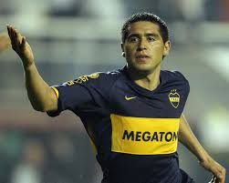

Início
Início de Carreira de Lucho Acosta
Lucho Acosta, cujo nome completo é Luciano Federico Acosta, iniciou sua carreira profissional na Argentina, seu país natal, onde nasceu em 31 de maio de 1994, em Rosario.

Desde jovem, destacou-se como meio-campista habilidoso. Ele ganhou destaque inicialmente no futebol argentino, o que lhe abriu portas para atuar em clubes internacionais. Um ponto marcante em seu início foi ser o primeiro jogador a vestir a camisa 10 do Boca Juniors após a saída de Riquelme, uma referência importante no futebol argentino.
